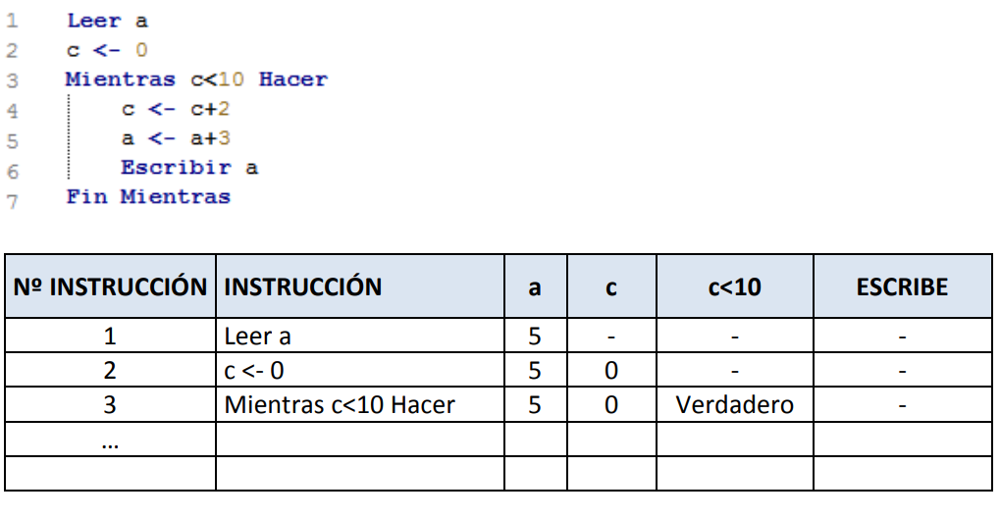

1 Unidad 1. Elementos de un programa informático.
1.1 Resumen del contenido.
1.1.1 Introducción
1.1.2 Programas y programación
Algoritmo: Secuencia ordenada de pasos, descrita sin ambigüedades, que conducen a la solución de un problema dado.
Los algoritmos son independientes de los lenguajes de programación y de las computadoras donde se ejecutan.
La diferencia fundamental entre algoritmo y programa es que, en el segundo, los pasos que permiten resolver el problema, deben escribirse en un determinado lenguaje de programación para que puedan ser ejecutados en el ordenador y así obtener la solución.
1.1.3 Fases de la programación
- Fase de resolución del problema.
- Análisis. Fase de especificación de requisitos. Qué datos necesitamos como entradas, qué información tendremos como salida final.
- Diseño. Codificación del algoritmo de forma detallada. En esta fase se incluye la prueba o traza del programa, que deberá realizarse tantas veces sea necesaria para detectar errores y resolverlos antes de la fase de implementación. Y consiste en la
- Fase de implementación.
- Fase de explotación.
PENDIENTE
1.2 Ejercicios.
1.2.1 Ejercicios-I. Algoritmos iniciales (pseudocódigo)
1.- Construir un algoritmo que tome como dato de entrada un número que corresponde a la longitud de un radio y nos calcula y escribe la longitud de la circunferencia, el área del círculo y el volumen de la esfera.
\(l=2*pi*r\)
\(a=pi*r2\)
\(v=4/3*pi*r3\)
Solución con pseudocódigo
“/pseudo_code_exercises/ud_1_ejercicio_1.psc”
Algoritmo calculos_radio
Escribir "Ingrese la longitud del radio:"
Leer A
l <- 2*3.1416*A
a <- 3.1416*A^2
v <- (4/3)*3.1416*A^3
Escribir "La longitud de la circunferencia es: ",l
Escribir "El área de la circunferencia es: ",a
Escribir "El volumen de la esfera es: ",v
FinAlgoritmoSolución con R
calculos_radio <- function(r) {
l = 2*pi*r
a = pi*r**2
v = (4/3)*pi*r**3
print(c(l, a, v))
}
calculos_radio(3)## [1] 18.84956 28.27433 113.09734Solución con Python
import math
def calculos_radio(r):
l = 2*math.pi*r
a = math.pi*r**2
v = (4/3)*math.pi*r**3
print(l, a, v)
calculos_radio(3)## 18.84955592153876 28.274333882308138 113.097335529232542.- Construir un algoritmo que leído un número por teclado nos diga si es positivo, negativo o nulo.
Solución con pseudocódigo
“/pseudo_code_exercises/ud_1_ejercicio_1.psc”
Algoritmo numero_signo
Escribir "Introduzca un número entero:"
Leer A
Si A > 0 Entonces
Escribir "El número introducido es positivo."
SiNo
Si A < 0 Entonces
Escribir "El número introducido es negativo."
SiNo
Escribir "El número introducido es nulo."
Fin Si
Fin Si
FinAlgoritmoSolución con R
numero_signo <- function(num) {
if (num > 0) {
print("El número introducido es positivo.")
} else if (num < 0) {
print("El número introducido es negativo.")
} else {
print("El número introducido es nulo.")
}
}
numero_signo(-2)## [1] "El número introducido es negativo."Solución con Python
def numero_signo(num):
if num > 0:
print("El numero introducido es positivo.")
elif num == 0:
print("El numero introducido es nulo.")
else:
print("El numero introducido es negativo.")
numero_signo(-8)## El numero introducido es negativo.3.- Construir un algoritmo para calcular y escribir la suma de los 100 primeros números naturales. Utilizar las estructuras PARA, MIENTRAS Y REPETIR.
Solución con pseudocódigo
Estructura “MIENTRAS”
“/pseudo_code_exercises/ud_1_ejercicio_3_1.psc”
Proceso Ejercicio_3_1
n<-1
suma<-0
Mientras n<=100 Hacer
suma<-suma+n
n<-n+1
Fin Mientras
Escribir "Suma: ", suma
FinProcesoEstructura “PARA”
“/pseudo_code_exercises/ud_1_ejercicio_3_2.psc”
Proceso Ejercicio_3_2
suma<-0
Para n<-1 Hasta 100 Con Paso 1 Hacer
suma<-suma+n
Fin Para
Escribir "Suma: ", suma
FinProcesoEstructura “REPETIR”
“/pseudo_code_exercises/ud_1_ejercicio_3_3.psc”
Proceso Ejercicio_3_3
n<-1
suma<-0
Repetir
suma<-suma+n
n<-n+1
Hasta Que n>100
Escribir "Suma: ", suma
FinProcesoSolución con R
Solución con Python
4.- Construir un algoritmo para sumar independientemente los números pares y los impares comprendidos entre 1 y 100. Visualizar los resultados.
Solución con pseudocódigo
“/pseudo_code_exercises/ud_1_ejercicio_4.psc”
Proceso suma_pares_impares
suma_par<-0
suma_impar<-0
Para i<-1 Hasta 100 Con Paso 1 Hacer
Si i%2=0 Entonces
suma_par<-suma_par+i
SiNo
suma_impar<-suma_impar+i
FinSi
FinPara
Escribir "Suma par: ", suma_par
Escribir "Suma impar: ", suma_impar
FinProcesoSolución con R
Solución con Python
5.- Construir un algoritmo que leídos tres números introducidos por teclado me visualice el mayor.
Solución con pseudocódigo
“/pseudo_code_exercises/ud_1_ejercicio_5.psc”
Proceso numero_mayor
Definir n1,n2,n3 como entero
Escribir "Introduce el primer número"
Leer n1
Escribir "Introduce el segundo número"
Leer n2
Escribir "Introduce el tercer número"
Leer n3
// guardo en una variable el primer número para comparar el resto
// de números con él, de modo que si son mayores sustituyo su valor
mayor<-n1
Si n2>n1 Entonces
mayor<-n2
Fin Si
Si n3>mayor Entonces
mayor<-n3
Fin Si
Escribir "El mayor es: ",mayor
FinProcesoSolución con R
Solución con Python
6.- Construir un algoritmo para visualizar los N primeros múltiplos de 4, donde N es un número que se lee por teclado.
Solución con pseudocódigo
“/pseudo_code_exercises/ud_1_ejercicio_6.psc”
Proceso multiplos_de_4
Escribir "¿Cuántos múltiplos de 4 quieres?"
Leer n
Para i<-1 Hasta n Con Paso 1 Hacer
multiplo<-4*i
Escribir multiplo
FinPara
FinProcesoSolución con R
Solución con Python
7.- Construir un algoritmo para introducir una serie de números, que finaliza al leer el número 0. Una vez que ha finalizada la captura de números queremos saber cuantos había mayores, iguales y menores que 50.
Solución con pseudocódigo
“/pseudo_code_exercises/ud_1_ejercicio_7.psc”
Proceso comparacion_numero_50
mayores<-0
menores<-0
iguales<-0
Escribir "Introduce un número"
Leer n
Mientras n<>0 Hacer
Si n>50 Entonces
mayores<-mayores+1
Sino
Si n<50 Entonces
menores<-menores+1
Sino
iguales<-iguales+1
Fin Si
Fin Si
Escribir "Introduce un número"
Leer n
Fin Mientras
Escribir "Mayores de 50: ",mayores
Escribir "Menores de 50: ",menores
Escribir "Iguales 50: ",iguales
FinProcesoSolución con R
Solución con Python
__8.- Escribir un algoritmo que lea una temperatura en grados Fahrenheit y escriba su equivalente en grados centígrados C=(F-32)*5/9__
Solución con pseudocódigo
“/pseudo_code_exercises/ud_1_ejercicio_8.psc”
Proceso convertidor_fahrenheit_centigrados
Escribir "Introduce temperatura en ºF"
Leer F
C <- (F-32)*5/9
Escribir "Son " C " ºC"
FinProcesoSolución con R
Solución con Python
9.- Hacer un algoritmo que calcule el sueldo neto semanal de un trabajador a partir de la lectura de las horas trabajadas y el precio por hora. Para el cálculo del sueldo neto hay que tener en cuenta los siguientes datos:
Las primeras 35 horas se pagan al precio dado (precio normal).
Las horas que pasen de 35 se pagan a 1,5 de la tarifa normal.
Las tasas de impuestos son:
o Los primeras 5000€ son libres de impuestos.
o Entre 5000€ u 10000€ tienen un impuesto del 5%.
o Lo que sobrepase de 10000€ tiene un impuesto del 15%.
Solución con pseudocódigo
En este caso he incluido dos soluciones con pseudocódigo. La primera con el sufijo "_SBN“, que indica que es la solución a la que yo llegué. Y una segunda, con el sufijo”_CORRECCION", que es la solución que nos dio el profesor.
“/pseudo_code_exercises/ud_1_ejercicio_9_SBN.psc”
Proceso salario_semanal
Escribir "¿Cuántas horas trabajó el empleado durante la semana?"
Leer horas_trabajadas
Escribir "¿Cuál es el precio por hora trabajada?"
Leer precio_hora
Si horas_trabajadas<35 Entonces
sueldo_bruto<-horas_trabajadas*precio_hora
SiNo
sueldo_bruto<-35*precio_hora + (horas_trabajadas-35)*precio_hora*1.5
Fin Si
Si sueldo_bruto<=5000 Entonces
Escribir "Salario semanal: ", sueldo_bruto
SiNo
Si sueldo_bruto>5000 Y sueldo_bruto<=10000 Entonces
salario<-5000+0.95*(sueldo_bruto-5000)
Escribir "Salario semanal: ", salario
SiNo
salario<-5000+0.95*(5000)+0.85*(sueldo_bruto-10000)
Escribir "Salario semanal: ", salario
FinSi
FinSi
FinProceso“/pseudo_code_exercises/ud_1_ejercicio_9_CORRECCION.psc”
Proceso Ejercicio_9
Escribir "Introduce horas trabajadas esta semana"
Leer horas
Escribir "Introduce el precio por hora"
Leer precioHora
Si horas<35 Entonces
horasNormales<-horas
horasExtras<-0
SiNo
horasNormales<-35
horasExtras<-horas-35
Fin Si
bruto<-horasNormales*precioHora+horasExtras*(precioHora*1.5)
Si bruto<=5000 Entonces
tasas<-0
SiNo
Si bruto>5000 Y bruto<=10000 Entonces
tasas<-(bruto-5000)*5/100
SiNo
//sueldo bruto semanal de más de 10000
tasas<-((10000-5000)*5/100)+((bruto-10000)*15/100)
Fin Si
Fin Si
neto<-bruto-tasas
Escribir "Salario semanal bruto: ", bruto
Escribir "Tasas: ", tasas
Escribir "Salario semanal neto: ", neto
FinProcesoSolución con R
Solución con Python
10.- Diseñar el algoritmo de un programa que lee un número entero positivo y determina el número de dígitos necesarios para la representación de ese valor.
Solución con pseudocódigo
“/pseudo_code_exercises/ud_1_ejercicio_10.psc”
Proceso digitos_numero
Escribir "Introduce un número entero"
Leer n
c<-0
Mientras n>=1 Hacer
n<-n/10
c<-c+1
Fin Mientras
Escribir "Son necesaros " c " dígitos."
FinProcesoSolución con R
Solución con Python
1.2.2 Ejercicios-II. Algoritmos - Pseudocódigo
11.- Imaginemos que queremos desarrollar un algoritmo tal que al escribir un día de la semana aparezca por pantalla la actividad extraescolar a la que debe acudir nuestro hijo. Por ejemplo, si ejecutamos el programa y escribimos martes que aparezca “natación”.
Las actividades que se realizan por días son: lunes: psicomotricidad jueves: natación martes: natación viernes: descanso miércoles: música
Los días sábado y domingo no se realizan actividades con lo que si el usuario escribe por error alguno de estos días de la semana se debe mostrar el mensaje: “Día sin actividades”. Si por equivocación, además se escribe un día inexistente se debe mostrar en pantalla “Día erróneo”. Tener en cuenta las mayúsculas, minúsculas y tildes. No es lo mismo lunes que Lunes, ni miércoles que miercoles. Esto es así porque el carácter ‘l’ es distinto del carácter ‘L’ en el código ASCII que es el que se usa para representarlos.
Solución con pseudocódigo
Solución con R
Solución con Python
12.- Para realizar la traza se ha de hacer un seguimiento de los valores que toman las variables simulando manualmente la ejecución del algoritmo, es decir, siguiendo el flujo de ejecución del mismo. Haz la traza del siguiente programa e indica qué valores toman las variables y qué escribe, suponiendo que a “a” se le da el valor 5. Continúa rellenando la tabla.

Solución con pseudocódigo
Solución con R
Solución con Python
13.- Realiza un algoritmo que nos indique si un año determinado es bisiesto, debemos pedir al usuario el año. Un año es bisiesto si es múltiplo de 4, a excepción de los que siendo múltiplos de 4 también son múltiplos de 100 pero no de 400.
Solución con pseudocódigo
Solución con R
Solución con Python
14.- Realiza un algoritmo que pida al usuario una hora en elementos separados (hora 0-23, minutos 0-59 y segundos 0-59). A continuación se debe mostrar por pantalla qué hora será pasado un minuto.
Solución con pseudocódigo
Solución con R
Solución con Python
15.- Realiza la traza de seguimiento del ejercicio anterior. Usa valores extremos, por ejemplo 23 horas 59 minutos 10 segundos, o 0 horas 3 minutos y 59 segundos o las 5 horas 59 minutos 24 segundos.
Solución con pseudocódigo
Solución con R
Solución con Python
16.- Realiza un algoritmo que dé solución al cálculo del factorial de un número entero. n! = n x (n-1) x (n-2) x … x 1 Realiza una versión con un bucle PARA y otra con un bucle MIENTRAS.
Solución con pseudocódigo
Solución con R
Solución con Python
17.- Realiza un algoritmo que dé solución al problema de calcular la multiplicación de dos números mediante el uso de sumas sucesivas.
Solución con pseudocódigo
Solución con R
Solución con Python
18.- Realiza un algoritmo que pida dos números X e Y de forma que se pretende calcular \(X^Y\) suponiendo que no existe el operador de potencia. X puede ser cualquier número entero distinto de 0. Y puede ser cualquier entero positivo, negativo o nulo.
(Recuerda que \(X^0 =1, X-Y=1/X^Y\))
Solución con pseudocódigo
Solución con R
Solución con Python
19.- Algoritmo que lea un valor entero que represente la posición ordinal de un mes (1,2,…12) y nos diga cuantos días tiene ese mes, o un mensaje de error si el valor del mes es incorrecto. Para febrero se indicará 28 o 29 días.
Solución con pseudocódigo
Solución con R
Solución con Python
20.- Diseñar un algoritmo para jugar a la adivinanza de números. El ordenador generará un número al azar, entre 0 y 15, y el usuario tendrá que adivinar cuál es. Se dispondrá de todas las oportunidades que quiera y el programa tendrá que ir diciendo si se ha pasado o se quedó corto en cada intento. Finalmente cuando consiga acertarlo se deberá mostrar un mensaje de felicitación y el número de intentos que necesitó. Para generar el número al azar supondremos una función AZAR(x) que genera un número aleatorio entre 0 y x-1.
Como al menos se deberá de repetir una vez el intento de acierto, es más adecuado una estructura REPETIR ..HASTA/MIENTRAS. En cada repetición se pide al usuario el número y se compara con el que hay que acertar, incrementando el número de intentos. Con una estructura SI se comprueba si se pasó, se quedó corto o lo acertó. La condición de salida de REPETIR será que se haya acertado.
Solución con pseudocódigo
Solución con R
Solución con Python
1.2.3 Ejercicios-III. Programación modular.
21.- Dados dos valores numéricos reales almacenados en dos variables de nombre a y b, hacer un programa que llame a una función de nombre Cambiar(v1, v2) a la que se le pasan como parámetros dichas variables e intercambia sus valores, mostrando el resultado.
Solución con pseudocódigo
Solución con R
Solución con Python
22.- Escribe un programa con diseño modular que recoja por teclado dos números reales y presente una serie de opciones correspondientes a operaciones aritméticas a realizar con las mismas:
- Sumar
- Restar
- Multiplicar
- Dividir En función de la operación elegida, se llama a la función correspondiente que retorna el valor del resultado de dicha operación, que se muestra en el programa principal.
Solución con pseudocódigo
Solución con R
Solución con Python
23.- Escribir un programa que utilice una función recursiva para calcular y retornar la potencia de un número real distinto de cero, siendo su exponente entero y positivo.
Xn = X * X n-1 X0 = 1
Solución con pseudocódigo
Solución con R
Solución con Python
24.- Realizar un programa que disponga de una función llamada esBisiesto que reciba un año y devuelva cierto si es bisiesto y falso si no lo es. Realizado en el Ejercicio 13: Los años que sean divisibles por 4 serán bisiestos; aunque no serán bisiestos si son divisibles entre 100 (como los años 1700, 1800, 1900, 2100) a no ser que sean divisibles por 400 (como los años 1600, 2000, 2400).
Solución con pseudocódigo
Solución con R
Solución con Python
25.- Construir un algoritmo que calcule el número “e”, la base de los logaritmos neperianos, calcular a partir de la siguiente aproximación: e= 1 + 1/1! + 1/2! +1/3! + …… + 1/N! siendo N un número entero positivo mayor que 10 que se pedirá por teclado. Utilizar una función para calcular los factoriales correspondientes a los denominadores de los términos.
Solución con pseudocódigo
Solución con R
Solución con Python